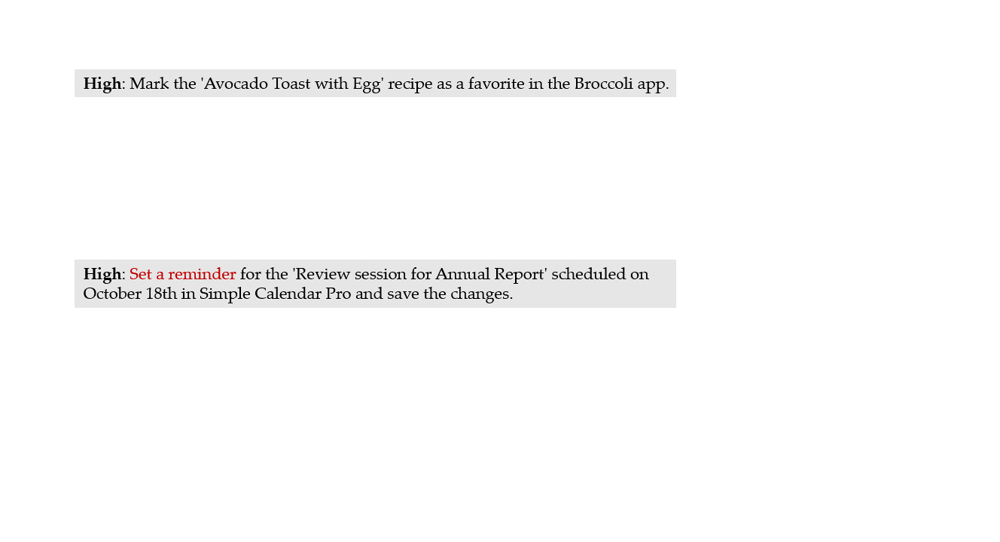
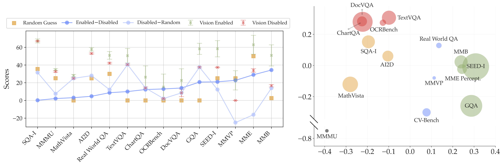
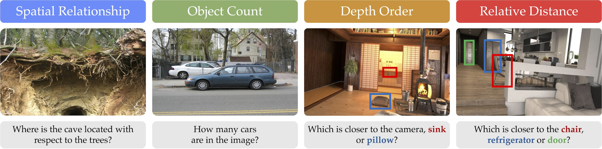
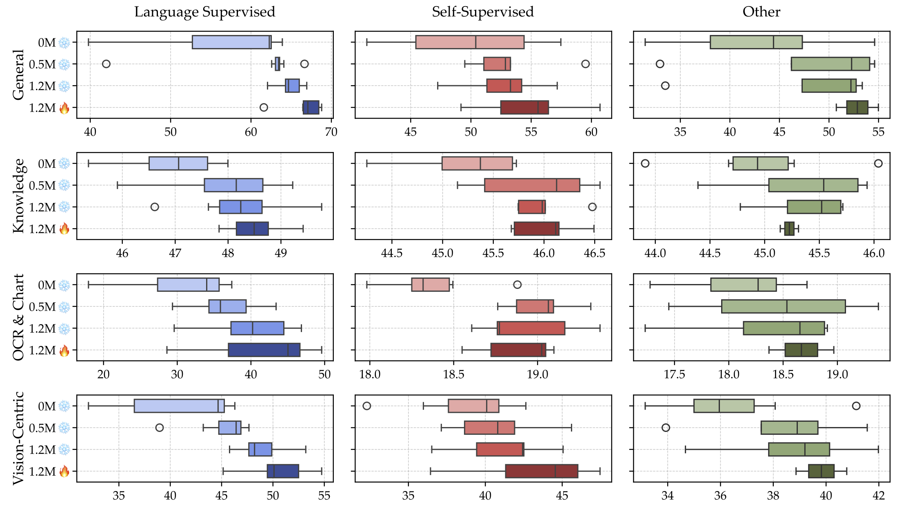
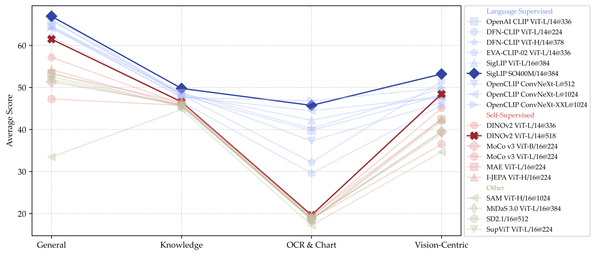
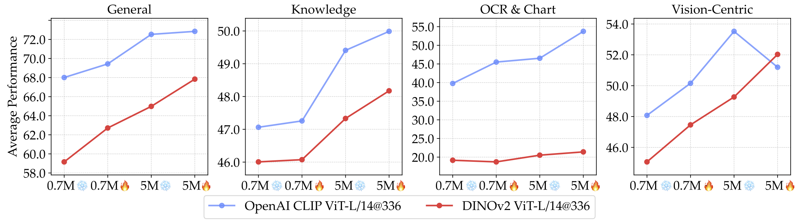

Automating GUI Agent Trajectory Construction
via Reverse Task Synthesis
Introducing OS-Genesis, a
manual-free
data pipeline for synthesizing GUI agent trajectory. OS-Genesis is characterized by the following
core features:
Interaction-driven: Agents actively explore GUI environments through stepwise interactions to discover functionalities and generate data.
Reverse Task Synthesis: OS-Genesis retroactively derives meaningful low/high-level task instructions from observed interactions and state changes, enabling the construction of diverse and executable trajectories without pre-defined tasks.
Trajectory Data: We construct and release high-quality mobile and web trajectories to accelerate GUI agents research.
Performance: OS-Genesis significantly outperforms other synthesis methods on benchmarks like AndroidWorld and WebArena.
We introduce OS-Genesis, an interaction-driven pipeline that synthesizes high-quality and diverse GUI agent trajectory data without human supervision. By leveraging reverse task synthesis, OS-Genesis enables effective training of GUI agents to achieve superior performance on dynamic benchmarks such as AndroidWorld and WebArena.
Cambrian-1 is structured around five key pillars, each offering important insights into the design space of
MLLMs:
§Connector Design: We design a new dynamic and
spatially-aware connector that integrates visual features from several models with LLMs while
reducing the number of tokens.
§Instruction Tuning Data: We curate high-quality
visual instruction-tuning data from public sources, emphasizing the importance of distribution
balancing.
To this end, Cambrian-1 not only achieves state-of-the-art performance, but also serves as a comprehensive,
open cookbook for instruction-tuned MLLMs. See §State-of-the-art MLLM
performance.
We provide model weights,
code,
datasets,
and detailed instruction-tuning and evaluation recipes. We hope our release will inspire and accelerate
advancements in multimodal systems and visual representation learning.

Analyzing the Benchmarks
Who's answering: LLM or MLLM?: We compare performance between vision-disabled and
vision-enabled settings across MLLMs trained with 23 different vision backbones. Our findings reveal
that some benchmarks such as MMMU and AI2D are less reliant on visual inputs, whereas others such as
MMVP and MME experience significant performance declines, indicating their effective evaluation of
multimodality
Benchmark Clustering and Analysis: Through correlation analysis and principal
component analysis of MLLM performances across various benchmarks, distinct clusters emerge
categorized as "General," "Knowledge," "Chart & OCR," and "Vision-Centric."
We also find that vision-centric benchmarks are underrepresented in the current evaluation
landscape.

Figure 1: Analyzing the benchmarks.
Left: Performance comparison of MLLMs with visual input enabled and
disabled across various benchmarks. Right: Principal component analysis
displaying clusters of benchmarks based on performance metrics, with bubble size
corresponding to benchmark size.
Cambrian Vision-Centric Benchmark (CV-Bench)
To address the scarcity of vision-centric benchmarks, we introduce CV-Bench—repurposing
standard vision tasks for multimodal evaluation. CV-Bench contains approximately 2600 vision-centric
VQA questions, addressing the issues with existing vision-centric bechmark size.

Figure 2: Example questions in CV-Bench that focuses on 2D and 3D visual
understanding.
Instruction Tuning Recipes
MLLMs connect pre-trained LLM and vision backbones using a connector such as an MLP projector.
Various studies have suggested different optimal training methodologies for MLLMs.
One Stage vs Two Stage Training Recent work suggests skipping connector
pre-training to reduce compute costs without harming performance.
We experiment with 0, 0.5M, and 1.2M adapter data. Following LLaVA's method, we initially tune only the connector, then unfreeze both the LLM
and connector for instruction tuning with a 737K data mix. Figure 3
indicates that pre-training the connector boosts performance, and using more adapter data enhances
it further, leading us to standardize on a 2-stage training approach with 1.2M adapter data.
Freeze vs Unfreeze Vision Encoder
There are also mixed practices in freezing or unfreezing vision backbones during fine-tuning.
Some argue that unfreezing the vision backbone significantly degrades performance.
Our experiments demonstrate that, with a reasonable vision model learning rate,
unfreezing benefits performance across all benchmarks except for a marginal change in Knowledge
benchmarks.

Figure 3: MLLMs benefit from pre-training the adapter with more data, and
finetuning with unfrozen visual encoder.
MLLMs as a Vision Model Evaluator
MLLMs provide a more real-world evaluation of visual representations than traditional benchmarks
like ImageNet-1k. We use 2-stage instruction tuning with 1.2M adapter data and 737K fine-tuning data
to compare a variety of vision models on downstream MLLM performance.
Our evaluations show language-supervised models exhibit strong advantages across all benchmark
categories, especially in OCR & chart tasks. However, despite the smaller dataset size of SSL models
like DINOv2, they perform competitively in vision-centric benchmarks.

Figure 4: MLLMs as an interface to evaluate visual representations.
Hover & click to interact.
Narrowing the gap between CLIP and SSL models
Above, we observe that DINOv2 stands midway between SSL models and CLIP models on general VQA and
knowledge VQA tasks,
even outperforming some CLIP models on vision-centric benchmarks with higher resolution.
We investigate unfreezing the vision backbones and increasing the amount of visual fine-tuning data
to narrow this gap.
In Figure 5, we observe that by unfreezing the vision backbone,
the DINOv2-based MLLM fine-tuned with 5M data surpasses the MLLM trained with a CLIP model on 0.7M
data.
Additionally, the gap between DINOv2 and the CLIP models is reduced under the 5M data experiment
setting.

Figure 5: By unfreezing the visual backbone and fine-tuning on 5M examples,
the gap between CLIP and DINOv2 can be narrowed.
Combining Multiple Vision Encoders
As observed in Figure 4, different vision models excel in
different aspects of MLLM performance.
We explore the potential of combining multiple vision encoders to leverage their distinctive
representations.
Given that different vision encoders use varying architectures and image resolutions, we interpolate
the output visual tokens to a fixed number, 576.
The results are tabulated in Table 2, where we observe consistent
performance improvements with the addition of more models.
Base Model
Strategies
AndroidWorld
AndroidControl-High
AndroidControl-Low
SR
Type
SR
Type
GPT-4o
Zero-Shot (M3A)
23.70
53.04
69.14
69.59
80.27
InternVL2-4B
Zero-Shot
0.00
16.62
39.96
33.69
60.65
Task-Driven
4.02
27.37
47.08
66.48
90.37
Task-Driven w. Self Instruct
7.14
24.95
44.27
66.70
90.79
OS-Genesis
15.18
33.39
56.20
73.38
91.32
InternVL2-8B
Zero-Shot
2.23
17.89
38.22
47.69
66.67
Task-Driven
4.46
23.79
43.94
64.43
89.83
Task-Driven w. Self Instruct
5.36
23.43
44.43
64.69
89.85
OS-Genesis
16.96
35.77
64.57
71.37
91.27
Qwen2-VL-7B
Zero-Shot
0.89
28.92
61.39
46.37
72.78
Task-Driven
6.25
38.84
58.08
71.33
88.71
Task-Driven w. Self Instruct
9.82
39.36
58.28
71.57
89.73
OS-Genesis
17.41
44.54
66.15
74.17
90.72
Table 2: All Benchmark Results for Model Ensemble with 1.2M Adapter Data + 737K
Instruction Tuning Data
However, this strategy has two limitations:
1) it employs interpolation, which can potentially lead to information loss, especially on vision
encoders with high-resolution feature maps, and
2) it treats each model equally by simple concatenation.
Therefore, we seek a more effective strategy that fully leverages model combinations with less
information loss and more flexibility.
Spatial Vision Aggregator (SVA): A New Connector Design
To effectively aggregate features from multiple vision encoders and reduce information loss during
interpolation, we use a set of learnable latent queries that interact with multiple vision features
through cross-attention layers.
In particular, our approach incorporates two new vision-centric design principles:
We encode spatial inductive bias by explicitly localizing the aggregation space for each token in
the query.
We perform vision feature aggregation multiple times across the LLM layers, allowing the model to
repeatedly reference necessary visual information.
Figure 6: Spatial Vision Aggregator (SVA).
Conclusion
OS-Genesis is a data synthesis pipeline designed to revolutionize the construction of GUI agent trajectories. We hope that it can provide a promising direction for generating high-quality trajectory data for GUI agent training, bringing the community one step closer to achieving digital automation
Acknowledgement
We would like to thank AndroidWorld authors for helping us tackle various issues in dynamic environments, as well as the Cambrian authors for providing this webpage template.
BibTeX
@article{sun2024osgenesis,
title={{OS-Genesis: Automating GUI Agent Trajectory Construction via Reverse Task
Synthesis}},
author={Qiushi Sun and Kanzhi Cheng and Zichen Ding and Chuanyang Jin and Yian Wang and Fangzhi Xu and Zhenyu Wu and Chengyou Jia and Liheng Chen and Zhoumianze Liu and Ben Kao and Guohao Li and Junxian He and Yu Qiao and Zhiyong Wu},
journal={arXiv preprint arXiv:2412.19723},
year={2024}
}